神奇的藥丸
Adobe Premiere是一個功能強大的專業剪輯軟體， 因為十分專業且功能一應俱全， 非常吃電腦的性能，下載之前請謹慎評估電腦是否能夠負荷。 以下是操作步驟：
- 首先，這是Premiere_Pro_Set-Up.exe ，是下載 premiere 的執行檔，請先前往下載。
- 現在，我們要去取得破解腳本。這是GenP 破解腳本的GitHub 請下載Adobe-GenP-3.1.zip，並且解壓縮 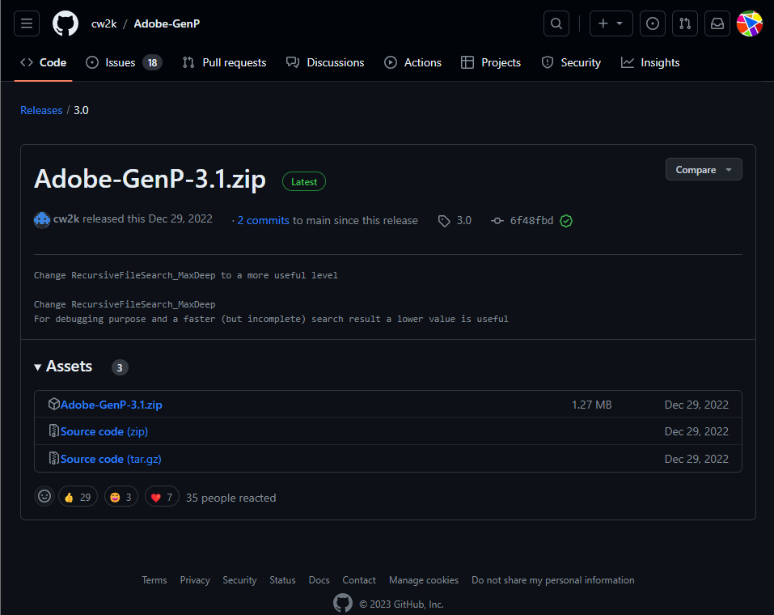
- 該下載的東西都下載好了，接下來請執行Premiere_Pro_Set-Up.exe，然後你會看到如下的畫面，回答下列問題，然後按繼續 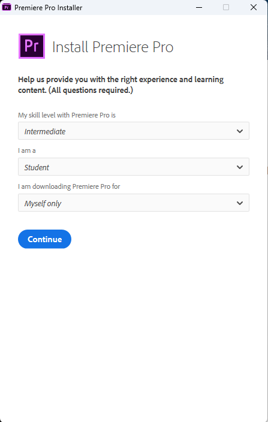
- 這個步驟你需要創一個Adobe的帳號，選擇一個你偏好的方式創建一個帳號，若你先前就有Adobe的帳號那直接登入即可 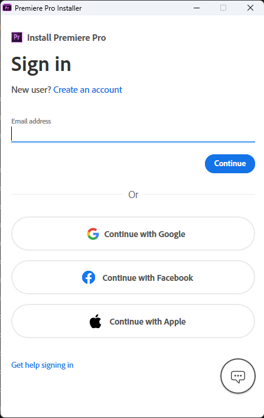
- 請耐心等待下載... 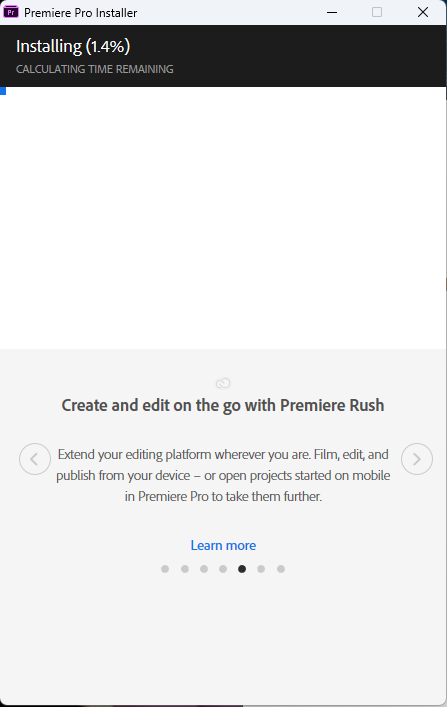
- 點擊同意並且繼續 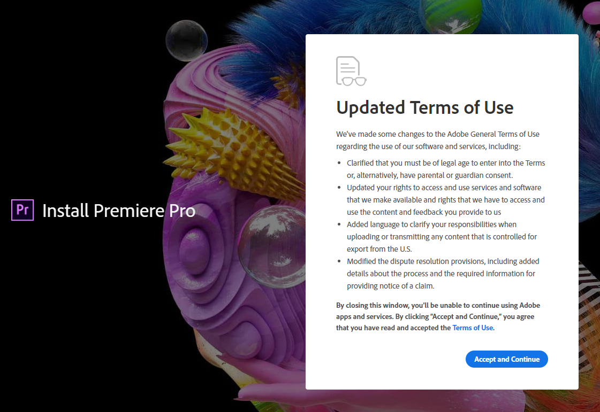
- 安裝軟體的部分到現在已經完成了 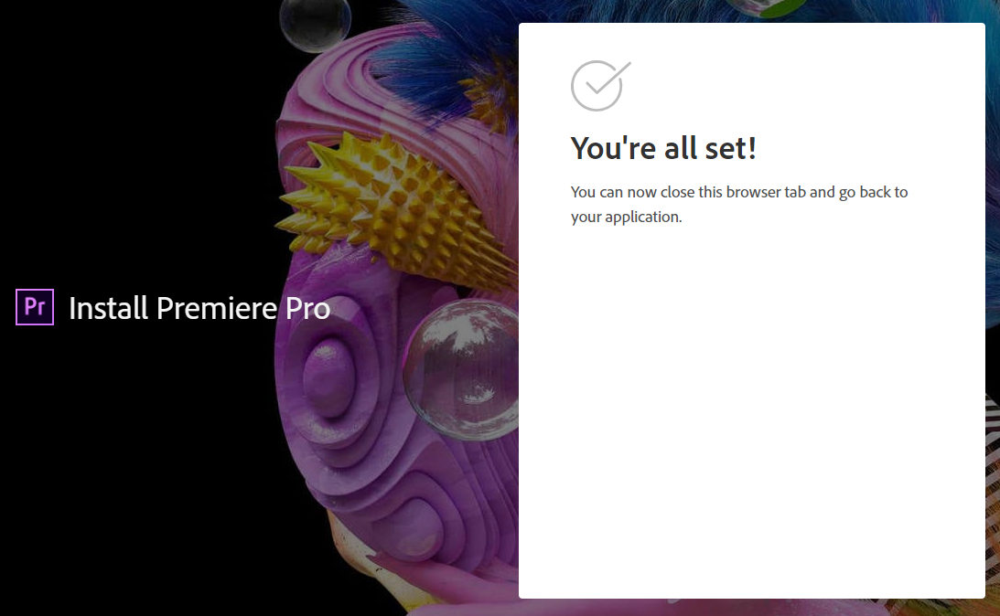
- 現在你打開 premiere 你會發現7天試用期的視窗會跳出來詢問是否要試用，接著你可以關閉所有的與 Adobe 有關的視窗了 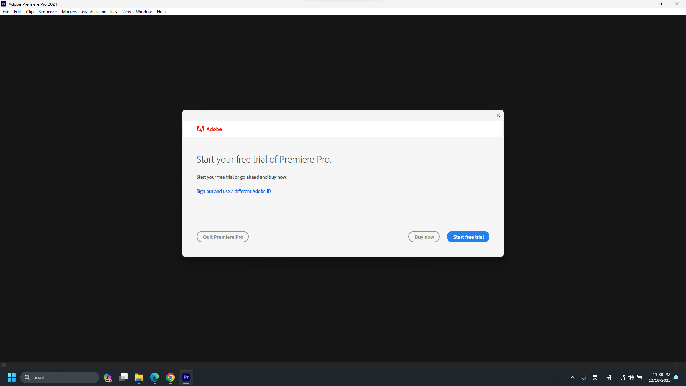
- 找到剛才下載的解壓縮的 Adobe-GenP，然後找到RunMe.exe並且用右鍵點選找到“以管理員的身分執行”, 若點擊之後有出現是否允許該程式更改你的電腦之類的視窗一律選“是”。 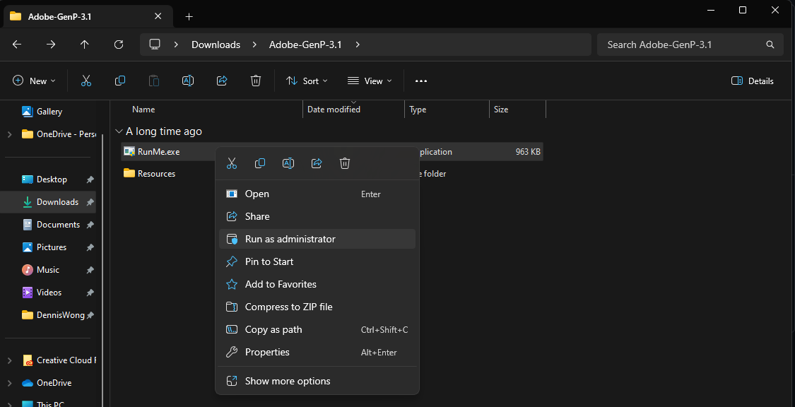
- 這是破解腳本打開的畫面，現在找到右下角的“Search Files”並點擊。

- 他會花一些時間尋找你下載了哪些 Adobe 的軟體並追查列出其路徑 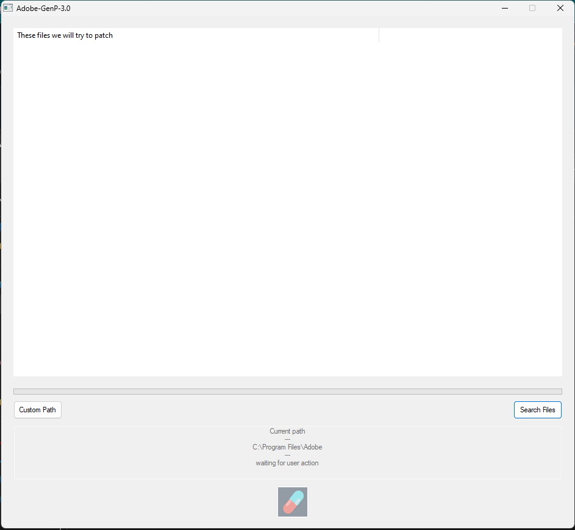
- 勾選全部已經找到的路徑並點擊最下方的膠囊的按鈕，然後等待程式執行完畢就可以關掉了 GenP 了 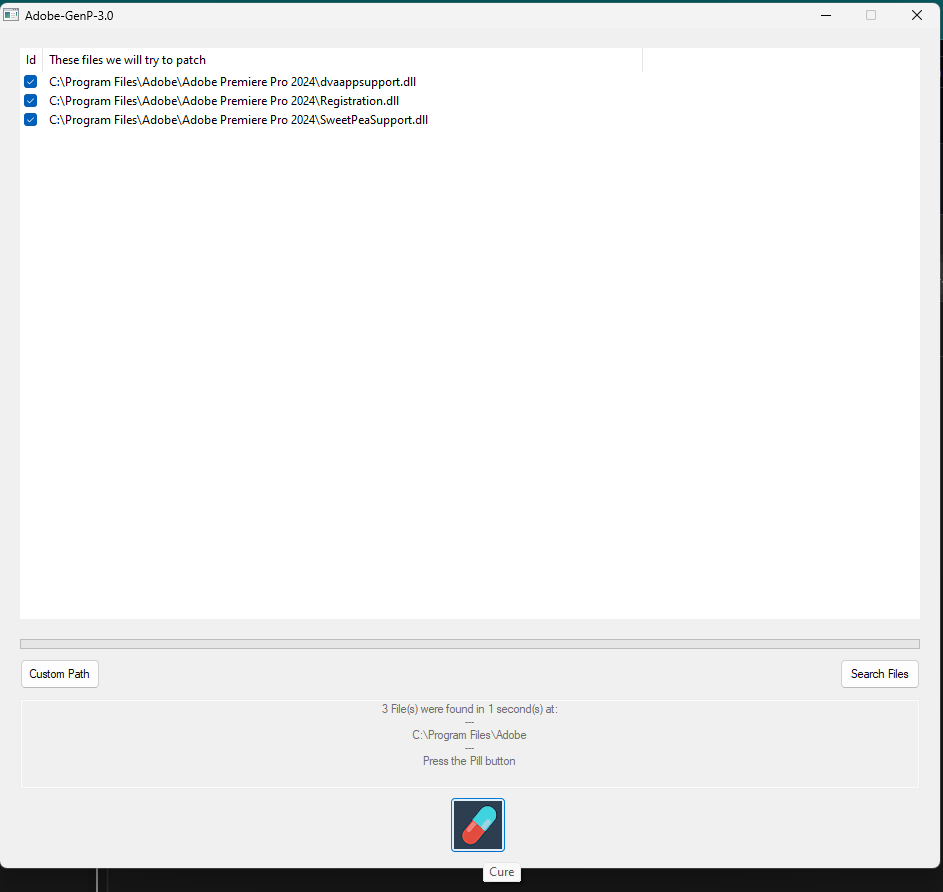
- 現在我們就能夠打開 Premiere 也不會看到試用的頁面了，打開程式若還是看到試用畫面表示破解失敗，請從第9個步驟開始從新破解 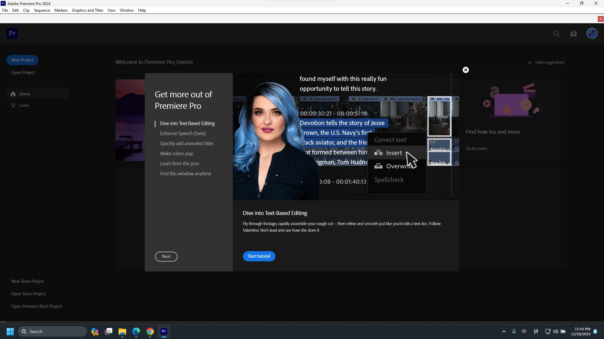
P.S. 你可以用 Adobe cloud 順道安裝你需要的程式,例如：photoshop, after effect, illustration... 然後同樣從第9個步驟開始破解這些程式。 請注意，試用破解版本的 Adobe 產品只能安裝最新版本，如 PhotoShop 最新版因為版本太新可能沒辦法讓電繪版有筆壓效果。